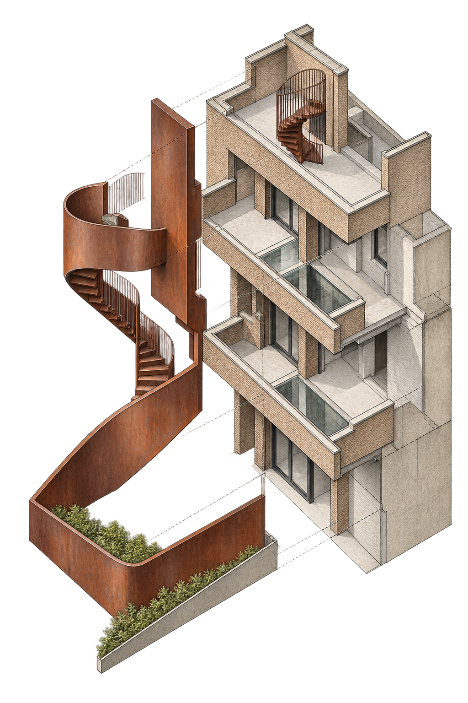
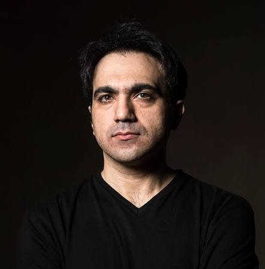

پروژه
خانه شاعر، بنایی مسکونی از دهه ۱۳۵۰ در مرکز تهران است که نکستآفیس با مدیریت طراحی علیرضا تغابنی آن را به یک مرکز فرهنگی عمومی تبدیل کرده است. مداخله جدید نشانههای اصلی بنا—نمای آجری، گوشههای منحنی و نعلدرگاهها—را خوانا نگه میدارد.
پیشنهاد تأسیس یک گالری هنر معاصر
خانه شاعر، تهران؛ باززندهسازی یک خاطره فرهنگی به بستری زنده برای هنر پیشرو، گفتوگو و تجربههای معاصر.
پیمایش کنیدخاطره و امکان
این خانه جایی است که احمد شاملو برای نخستینبار آیدا را دید؛ زنی که بعدها به مهمترین همراه زندگی او و یکی از چهرههای ماندگار در روایت زندگی و میراث شاملو تبدیل شد. خانه از این منظر تنها یک مکان تاریخی نیست، بلکه بخشی از خاطره و زیست فرهنگی یکی از مهمترین شاعران معاصر ایران را در خود جای داده است.
اکنون، با بازطراحی خانه و شکلگیری فضاهای فرهنگی گوناگون، امکان آن فراهم شده است که این مکان بار دیگر به فضایی برای تجربه، گفتوگو و فعالیت فرهنگی تبدیل شود. گالری با رویکردی پیشرو شکل میگیرد؛ رویکردی که فراتر از نمایش آثار، بر معرفی هنرمندان، جریانها و ایدههایی تمرکز دارد که مرزهای هنر معاصر را گسترش میدهند.
میراث شاملو نه در بازسازی گذشته، بلکه در ادامهدادنِ روحیه تجربهگرایی، عبور از مرزها و گشودن راههای تازه معنا پیدا میکند.

معماری باززندهسازی
خانه شاعر، بنایی مسکونی از دهه ۱۳۵۰ در مرکز تهران است که نکستآفیس با مدیریت طراحی علیرضا تغابنی آن را به یک مرکز فرهنگی عمومی تبدیل کرده است. مداخله جدید نشانههای اصلی بنا—نمای آجری، گوشههای منحنی و نعلدرگاهها—را خوانا نگه میدارد.
نقطه آغاز طرح، دیواری در طبقه دوم بود که شعری با دستخط شاملو برای آیدا روی آن باقی مانده بود. منطق این یادگار در قالب سازهای فولادی از حیاط تا بام گسترش یافته است؛ عنصری که گردش سهبعدی، تقویت سازه و روایت فرهنگی خانه را یکپارچه میکند.
صفحات و پوسته فولادی در کنار جرم آجری قدیمی آشکار باقی میمانند تا مرز دو دوره ساخت خوانا باشد. اتصال جدید برگشتپذیر است و بدون تخریب دائمی بنای اصلی قابل جداسازی؛ معماری تازه تاریخ خانه را پنهان نمیکند، امکان زندگی دوباره آن را فراهم میسازد.
مدل فعالیت
برنامههایی با روایت روشن، انتخاب دقیق و شیوه ارائه متناسب با معماری خانه.
همنشینی هنرمندان تثبیتشده و نسلهای نو برای ایجاد گفتوگویی بیننسلی.
پرفورمنس، ویدئو، وبآرت و تجربههایی در مرز هنر، اندیشه و دیگر حوزههای فرهنگی.
پیوند نمایشگاه با کتابخانه، کتابفروشی، کافه و رستوران برای ساختن یک مرکز فرهنگی عمومی.

امیر راد، متولد ۱۳۵۵ در تهران و دانشآموخته کارشناسی ارشد نقاشی از دانشگاه هنر تهران، هنرمند میانرسانهای، کیوریتور، مدرس و پژوهشگر هنر معاصر است. او مدیر و مؤسس کانون نیومدیای موزه هنرهای معاصر تهران، رئیس هیئتمدیره انجمن هنرمندان نقاش ایران و عضو هیئترئیسه و شورای عالی خانه هنرمندان ایران بوده است.
فعالیتهای او حوزههایی چون پرفورمنسآرت، ویدئوآرت، وبآرت و نقاشی را دربرمیگیرد. کیوریتوری «سی پرفورمنس، سی هنرمند، سی روز»، تشکیل گروه بتا و برگزاری جشنواره بینالمللی رادیکال پرفورمنس بخشی از تجربه او در شکلدادن به پروژههای هنر معاصر است.
آرشیو تصویری
معماری: نکستآفیس · معمار ارشد: علیرضا تغابنی · عکاسان: احسان حاجیرسولیها، پرهام تقیاف و مهدی کامبوزیا · منبع اطلاعات پروژه: آرل / Designboom · مشاهده منبع پروژه ↗